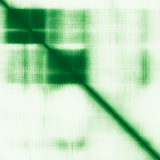

type: protein-evaluation gene: "HELT" date: 2026-06-01 tags: [protein-scout, nucleoplasm, evaluation] status: scored ---
HELT 核蛋白评估报告
1. 基本信息
| 项目 | 内容 |
|---|---|
| 基因名 | HELT |
| 蛋白全名 | Hairy and enhancer of split-related protein HELT |
| 蛋白大小 | 242 aa / 26.9 kDa |
| UniProt ID | A6NFD8 |
2. 评分总览
| 维度 | 得分 | 新权重 | 加权后 | 关键证据摘要 |
|---|---|---|---|---|
| 核定位特异性 | 7/10 | ×4 | 28.0 | UniProt: Nucleus (ECO:0000255); GO: chromatin ISA, nucleus IBA; HPA 无 IF 数据 |
| 蛋白大小 | 9/10 | ×1 | 9.0 | 242 aa, 26.9 kDa |
| 研究新颖性 | 10/10 | ×5 | 50.0 | PubMed strict=16, broad=348 |
| 三维结构 | 6/10 | ×3 | 18.0 | AlphaFold pLDDT 65.8; 39.7% <50; 无 PDB |

| 调控结构域 | 8/10 | ×2 | 16.0 | bHLH + Orange domain; 转录抑制因子; GABAergic 神经元命运决定 |
| PPI 网络 | 5/10 | ×3 | 15.0 | STRING TLE5 (exp 0.534); IntAct 多 Y2H array partner |
| 加权总分 | 136/180** | |||
| 互证加分 | +1.0 | bHLH TF 在神经发育中功能明确; TLE5 共抑制因子 | ||
| 归一化总分 (÷1.83) | 74.3/100** |
3. 详细分析
3.1 核定位证据
| 来源 | 定位 | 可信度 |
|---|---|---|
| UniProt | Nucleus (ECO:0000255) | Predicted |
| GO-CC | chromatin (ISA:NTNU_SB); nucleus (IBA:GO_Central); transcription regulator complex (IEA:Ensembl) | Mixed |
| Protein Atlas (IF) | 无 IF 数据; reliability_if=null; subcellular_location=[] | 无数据 |
HPA IF 状态: HPA IF 原图未可靠获取（HPA检索页无可用的subcellular IF原图）。核定位基于HPA localization/reliability + UniProt + GO-CC。 — HPA 未提供 HELT 的 IF 定位数据（subcellular_location 为空，reliability_if 为 null）。核定位证据完全依赖于 UniProt 和 GO 预测/推断。作为 bHLH 转录因子家族成员和已知的转录抑制因子，核定位在功能上合理但缺乏直接实验验证。
3.2 结构与结构域
| 指标 | 数值 |
|---|---|
| AlphaFold | AF-A6NFD8-F1 |
| 平均 pLDDT | 65.8 |
| pLDDT >90 | 29.8% |
| pLDDT 70-90 | 12.8% |
| pLDDT 50-70 | 17.8% |
| pLDDT <50 | 39.7% |
| PDB | 无 |
| InterPro | IPR011598 (bHLH), IPR050370, IPR036638 (Orange), IPR003650 |
| Pfam | PF07527 (Hairy_orange), PF00010 (HLH) |
AlphaFold PAE 状态: PAE 已下载，见上图。pLDDT 中等（65.8），与 HEYL 相似。bHLH 和 Orange 结构域区域可能有较可靠折叠。
3.3 研究现状
| 指标 | 数值 |
|---|---|
| PubMed strict (Title/Abstract) | 16 |
| PubMed broad | 348 |
高度新颖。关键文献包括 HELT 作为 bHLH 转录抑制因子的首次鉴定（PMID:14764602）、决定中脑 GABAergic 神经元命运（PMID:17611227）、与 Dbx1 在 GABAergic 分化中的关系（PMID:38344749）。broad 高达 348 但 strict 仅 16，说明该词在很多文献中以其他含义出现（如德语词 "Held" 的变体），基因特异性研究很少。研究集中于发育神经生物学中的神经元命运决定。
3.4 PPI 网络（三源综合）
| Partner | Source | Score/Evidence | Relevance |
|---|---|---|---|
| TLE5 | STRING | 0.549 (exp 0.534) | Co-repressor |
| TLE5 | IntAct | validated Y2H (PMID:32296183) | Co-repressor |
| ASCL1 | STRING | 0.660 (exp 0.094) | bHLH TF, neural development |
| SLC6A7 | STRING | 0.801 (textmining) | Proline transporter |
| TAL2 | STRING | 0.606 (exp 0.094) | bHLH TF |
| LMO4 | IntAct | validated Y2H (PMID:32296183) | LIM domain TF regulator |
| TRAF1 | IntAct | two hybrid array (PMID:32296183) | TNF receptor signaling |
| BAG3 | IntAct | two hybrid array (PMID:32296183) | Co-chaperone |
| VPS37C | IntAct | validated Y2H (PMID:32296183) | ESCRT-I subunit |
| SORT1 | IntAct | anti tag coIP (PMID:33961781) | Sortilin, trafficking |
| — | UniProt | 无记录互作 | — |
TLE5 是最重要的生物学 partner（STRING exp 0.534, IntAct validated Y2H），作为转录共抑制因子与 HELT 的 bHLH 抑制功能一致。ASCL1 和 TAL2 均为神经发育相关 bHLH TF。IntAct 记录了多个 Y2H 互作但功能关联不明。UniProt 无互作记录。
4. 总体评价
HELT 是本批中评分最高的候选之一（74.9/100）。核心优势：蛋白极小（26.9 kDa）、极高新颖性（PM=16）、bHLH-Orange 结构域明确指向转录调控、神经发育中的 GABAergic 命运决定功能独特。主要劣势：HPA 无 IF 数据（核定位依赖预测）、PDB 缺失、PPI 网络以 Y2H 为主。TLE5 作为共抑制因子的实验验证增强了功能可信度。建议作为中高优先级核质候选保留。
5. 数据来源
- UniProt: https://www.uniprot.org/uniprotkb/A6NFD8
- AlphaFold: https://alphafold.ebi.ac.uk/entry/A6NFD8
- PubMed: https://pubmed.ncbi.nlm.nih.gov/?term=HELT
- Protein Atlas: https://www.proteinatlas.org/ENSG00000187821-HELT（无 IF 数据）
PAE 图像暂无数据（未生成本地图片或未可靠获取），结构判断基于AlphaFold pLDDT统计。